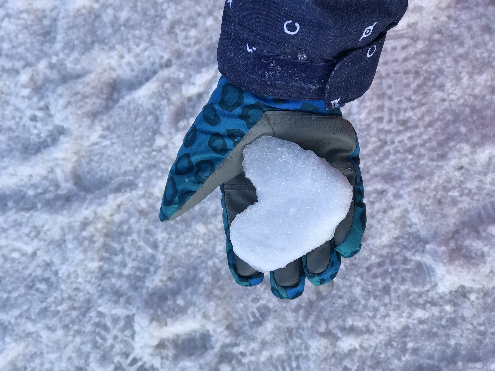
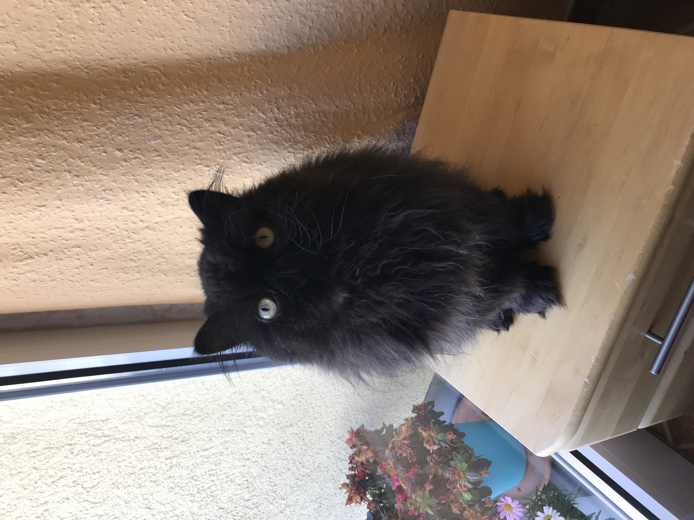
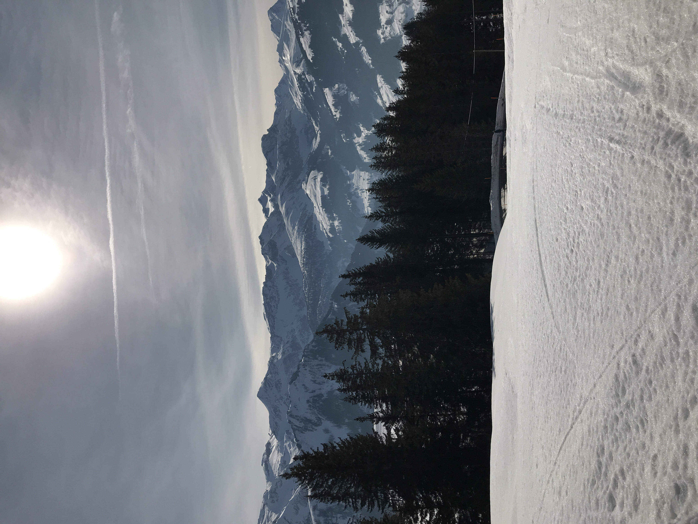

Pictures




Lenk
 This photo was taken in Lenk near the Wallegg skilift with with the Leiterli skilift in mind.
This photo was taken in Lenk near the Wallegg skilift with with the Leiterli skilift in mind.
- ISO: 20
- Shutter Speed: 1/8000 sec
- Aperture: f/1.8
- Focal Length: 3.99mm
- Camera: Apple iPhone 7 plus
- Resolution: 2131x2848
This photo was taken in Lenk near the Bühlberg Restaurant.
- ISO: 25
- Shutter Speed: 1/12048 sec
- Aperture: f/1.8
- Focal Length: 3.99mm
- Camera: Apple iPhone 7 plus
- Resolution: 4032x3024